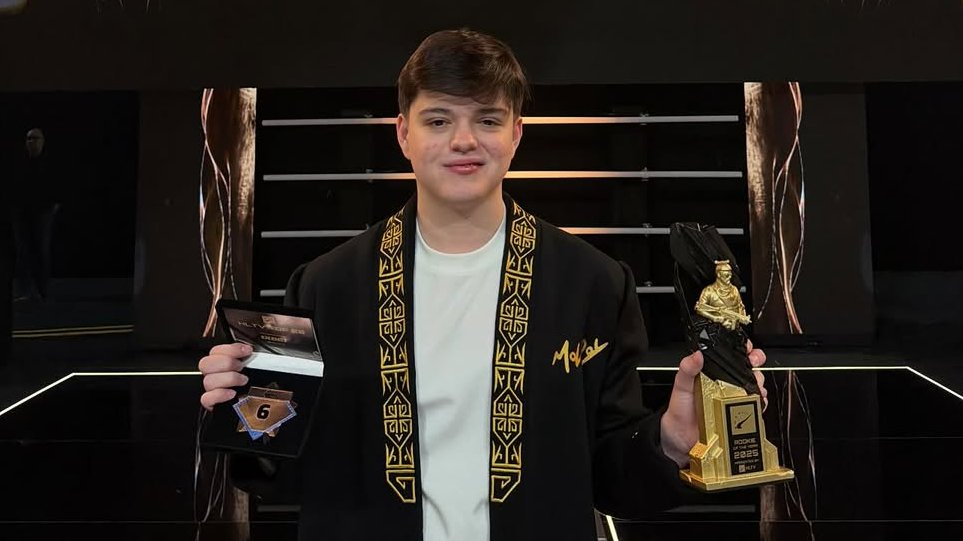

About Danil Golubenko
Danil "molodoy" Golubenko is a professional Counter-Strike 2 player from Semey, Kazakhstan. Known for his incredible sharp mechanical skills and aggressive sniper playstyle, he quickly rose through the competitive scene to become one of the most prominent tier-1 AWPers representing Kazakhstan globally.
Key Highlights & Achievements
- Primary AWPer for international esports rosters
- Multiple MVP awards in tier-1 Counter-Strike 2 tournaments
- Famous for clutch plays and aggressive AWP positioning
- Key representative of the Kazakhstani esports scene
Career Timeline
- 2005: Born on January 10 in Semey, Kazakhstan
- 2022-2023: Dominated local tournaments and European FPL ladders
- 2024: Made his professional tier-1 debut as a main AWPer
- 2025: Won international MVP titles and trophy victories